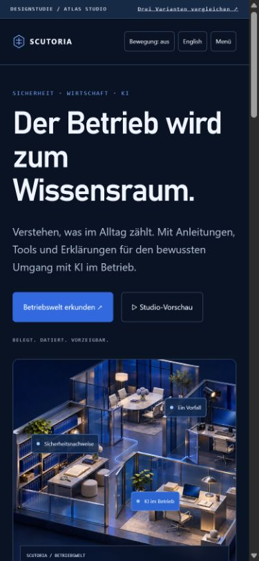
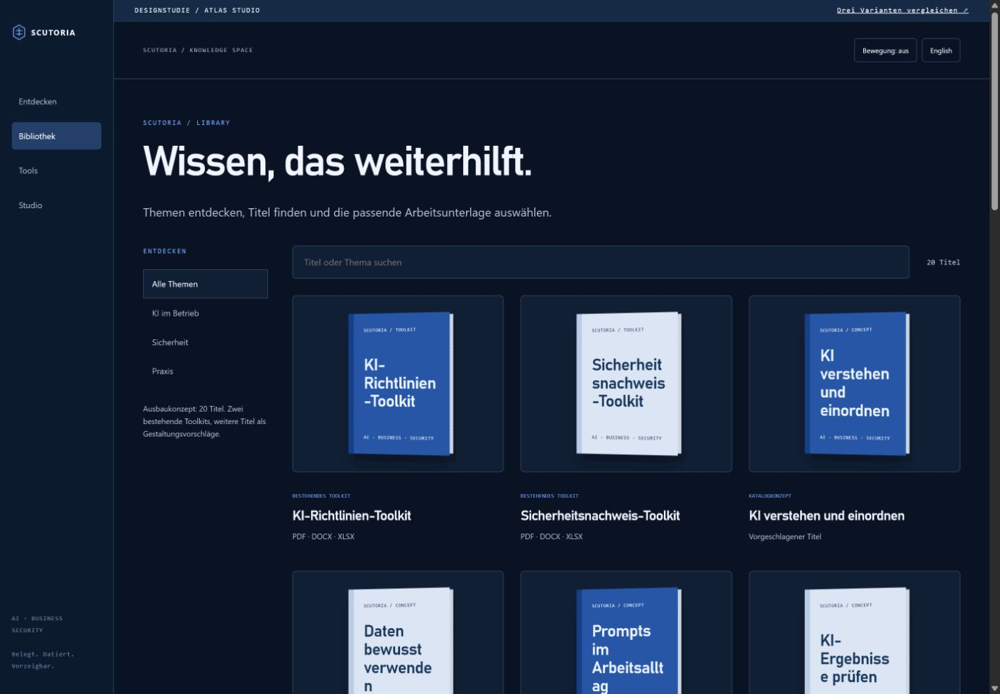
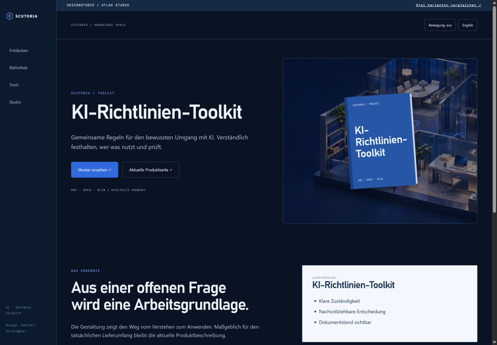
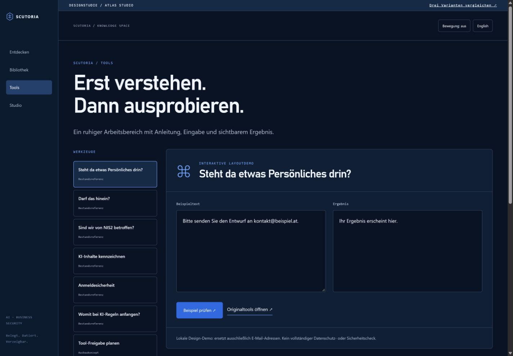

Dunkle Betriebswelt mit seitlicher Navigation, anklickbaren Themen und integriertem Lernstudio. Die ausgewogenste Mischung.





Designprototyp · zusätzliche Titel und Videoformate sind Konzepte · Bewegung in der interaktiven HTML-Vorlage.